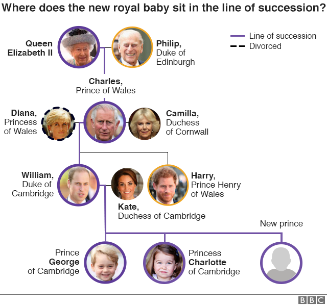
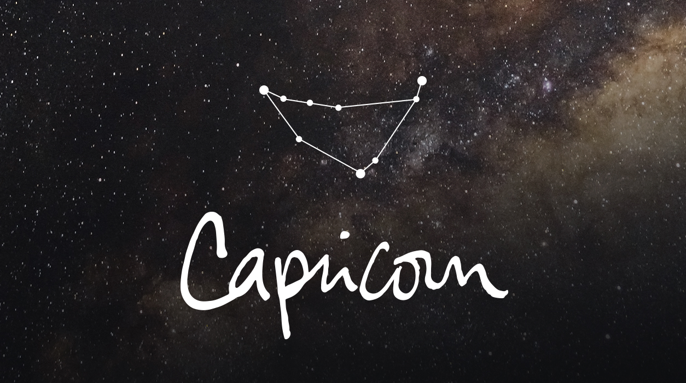
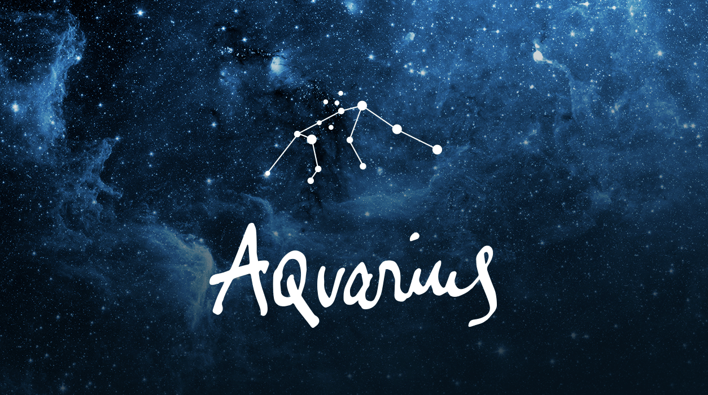

chapter4.3--handout
Background Information
Why did German despise Kaiser ?（凯撒国王为什么会遭到人们的唾弃？）
文中的凯瑟帝王就是大名鼎鼎的德皇，当年挑起第一次世界大战的其中一部分原因，就有他。
虽然德皇的野心勃勃，但是他是否要挑起战争，目前不能定论。他之所以不招人待见，就是因为他明知道大战要爆发，还竭力在争取和平，制造假象。但是他不管是有意还是无意，第一次世界大战的爆发的确有德皇的原因。他的出发点是希望德国变得更强大，结果适得其反。
Prince of Wales (威尔士亲王)
英格兰王国／大不列颠王国君主传统上会赐予王储威尔士亲王（或译威尔士王子）这个名衔。这个传统缘自1301年爱德华一世征服威尔士后，将这个名衔赐给其王储爱德华王子（后来的爱德华二世）。
根据传说，爱德华一世出兵征服威尔士后，他答应反抗的威尔士人会有“一位在威尔士出生、不会讲英语、生下来第一句话说威尔士语的亲王”作为他们的领袖。之后爱德华一世把行将分娩的埃莉诺王后接到了刚修建的卡纳冯城堡，不久，他就抱着自己新生的四子小爱德华出现在威尔士贵族们的面前，宣布将威尔士亲王的名号封给这个儿子。而且小爱德华不会说英语，他的哭声也和刚出生的威尔士人一模一样。
威尔士亲王的称号并不是王储自动拥有，而需要在位君主的正式册封。
威尔士王妃是给威尔士亲王的妻子的头衔。但因为前任威尔士王妃被经常被认为是戴安娜王妃，因此现任王妃卡米拉虽然拥有威尔士王妃的称号，但现时只使用康沃尔公爵夫人作为名衔。

Vocabulary
despise
💧v. to dislike to to hate
动词：鄙视，看不起，藐视
💧e.g.She despised her neighbours.
她看不起她的邻居。
hatred
💧n. an angry feeling of extreme dislike for someone or something
名词：憎恨，憎恶，仇恨
💧e.g. Abby made no secret of her hatred for her father.
阿比并不掩饰她对父亲的仇恨。
disposition
💧n. tendency,liability, trend
名词: 性情，性格
💧e.g.The film is not suitable for people of a nervous disposition.
这部影片不适合神经质的人观看。
usher
💧v. to show somebody's the way to get to some place, to lead, to guide, to invite, to serve
动词：引，领；招待
💧e.g.She stood back and ushered him in.
她往后退了退，领他进去。
Crush Your Problems
- I have discovered from personal experience that one can win the attention and time and cooperation of even the most sought-after people by becoming genuinely interested in them. Let me illustrate.
💧win the attention，赢得关注
这个短语非常好记，因为它的语序和中文一样，而且可以直译过去。
e.g.The charter states that VOA has to win the attention and respect of its listeners.
这个章程表明，美国之音必须赢得听众的关注和尊重。
💧sought-after，受欢迎的，很吃香的，千万注意这是个形容词！
e.g.Malagasy rosewood — reddish and superbly grained — is among the world’s most sought-after timber, especially since Asian sources of similar trees have been depleted.
微红并带有美丽花纹的马达加斯加紫檀木是世界上最受欢迎的木材，尤其是当亚洲相似的树材被伐尽以后。
这里提醒大家，关于单词，基础的词性还是要知道的，在了解一些词汇的词性以后，你会发现你的英语会说的更精准。
比如，lazy这个词我们都知道，是形容词“懒惰的”意思，那么你知道它的名词形式吗？它的名词形式就是laziness，“懒惰”。如果你想说“他很懒惰”，就是he's lazy。那么你想说“他的懒惰毁了他”，就是his laziness ruined him。
- They liked that. Who wouldn’t like it? So they left their homes and traveled to Brooklyn to give us a helping hand.
give us a helping hand，意为“提供帮助”，那么还有哪些说法是这个短语的同义词组呢？
💧offer help to sb
💧help sb with sth / help sb do sth
e.g.Even though teachers in primary schools feel overworked, it is essential that they quickly identify and offer help to the withdrawn children.
尽管小学教师也对此感觉到很累心，但他们很快地认清这种状况并且给予那些内向的孩子提供帮助是很重要的。
💧do sb a favor / do a favor for sb
e.g.Why do we feel good when someone does us a favor?
当有人帮助我们时，为什么我们感觉良好？ - Even his own nation turned against him when he fled over into Holland to save his neck.
💧save his neck，save one's neck/skin是“免受绞刑，免于遭难; 保住脑袋”的意思。
e.g.You really saved my neck by helping me check up on many details in my paper；otherwise I couldn't have got the work done in time．
你替我核对了这篇论文中的许多具体细节，真是帮了个大忙，否则我根本不可能及时完成这篇论文。
💧另一个和one's neck相关的短语也很常见：up to one's neck，指“某人手头要做的事实在太多,多得没法应付”。
Content Analysis
这一节承接昨日内容，卡叔继续举例说明当我们设身处地的关心他人的时候，还能获得美国最忙的人的注意和合作：
例如数年前，作者希望邀请到知名作家们来为学生分享，于是给他们写信，在信中表明对他们工作忙碌的理解并附带150位学生的签名和一张问题表，这种真诚的方式打动了作家们！
相同方式，卡叔也用在过政界名人身上，同样奏效！
第二个例子，作者提到德皇威廉和一个小男孩的故事。在所有人都厌恶德皇，而他自己也不得不去荷兰逃命的时候（Even his own nation turned against him when he fled over into Holland to save his neck. ），是小男孩真诚的信打动了威廉，后来男孩的母亲还嫁给了德皇。
之后卡叔提到自己用巧妙的占星法的方式来获取朋友生日的信息，然后在朋友生日到来时送上生日祝福（可以说是很能收服人心了~~）
另一个例子是关于在纽约工作的Charles R. Walters，他去了一家公司打探其业务情况，开始并不顺利，后来了解到对方孩子有集邮的爱好，于是带着邮票去谈业务，他用自己的细心和诚意成功打动对方，于是工作进展十分顺利啦~
Today's Bonus
我们看到在文中卡叔说 ：
Although I haven’t the foggiest bit of faith in astrology .
（虽然我压根儿就不信占星学），但是他就利用占星学去问他朋友们的生日。这里卡叔说，他会去问他的朋友，你相信一个人的出生日期决定了一个人的性格和性情吗？
（one’s birth has anything to do with character and disposition）
对于十二星座，zodiac signs，你都有什么了解？
十二星座一共分成风象星座，水象星座，火象星座和土象星座这四大类，也就是air，water，fire和earth。这四大类非常好记，那么具体到每一个星座他们的英文名又是什么呢？
- 土象星座，EARTH
💧Capricorn (December 22-January 19)
这个星座的特质是，冷静，现实，以及是一个极度热爱工作的工作狂，workaholic，而且什么委屈，什么情绪好像都可以用工作来抚平。没错，这就是你们大摩羯！

💧Virgo (August 23- September 22)
这个星座，不知道从哪一年开始就变成大家争先恐后去“黑”的对象了，但其实我觉得这个星座还是挺可爱的。我说一个它的特质就会有人喊出它的名字了，它就是星座界的五仁月饼——处女座。
💧Taurus (April 20-May 20)
这个星座是最会理财的星座，而且生命里唯有美食不可辜负，而且这个星座的脾气一般来说非常的倔强。这种又会赚钱又爱吃的星座，非金牛座莫属了。
- 风象星座， AIR
💧Libra (September 23- October 22)
世界上最纠结，最有选择恐惧症的人群是谁？没错，就是天秤座们。天秤的人，就真的好像一个秤子一样，永远在衡量是否平衡，可是这一生好像都没怎么量明白。
💧Aquarius (January 20-February 18)
这个星座，是被芸芸众生当作外（深）星（井）人（病）看待的，因为他们永远活在自己的世界里，也不太理会他人的看法，有时候自己都把自己当作外星人，脑回路不正常到自己都觉得清新脱俗。是的，他们就是水瓶座。

💧Gemini (May 21- June 20)
这个星座有时候分裂到完整形态，可以自己跟自己凑一桌子麻将了，可以静如处子，也可以动如脱兔。这就是双子座，一个你永远都摸不清他下一秒都在想什么的少年。
- 水象星座，WATER
💧Cancer (June 21-July 22)
一般来说大家对这个星座会有种贤妻良母的错觉，其实他们的控制欲以及能力可是很强的，这就是我们看似柔情似水的巨蟹座。
💧Pisces (February 19- March 20)
大家总是对这个星座有种误解，觉得他们动不动就哭，可其实他们是小事面前说哭就哭，大事面前稳如磐石的一个星座。他们还非常的浪漫，这就是双鱼座。
💧Scorpio (October 23-November 21)
这星座说起来大家都觉得他们腹黑，闻风丧胆。可其实他们的内心极其柔软，可能比双鱼和巨蟹都柔软。这典型的“刀子嘴豆腐心”就是天蝎座了。
- 火象星座，FIRE
💧Sagittarius (November 22-December 21)
这是一个放荡不羁爱自由的星座，你可以拿走它任何东西，但就是不能拿走它的自由，而且极其像小孩一样爱玩，他们就是射手座。
💧Leo (July 23-August 22)
我猜这个星座的英文大家最熟悉了，因为很多人会用这个英文名，他们就是狮子座。狮子座看起来挺强势的，可其实就是一只大猫咪，特别好说话。
💧Aries (March 21-April 19)
热情似火，火急火燎，这两个带着火的成语做能形容这个火象星座了，因为他们真的很风风火火，虽然有时候做事欠考虑，可执行力很强，他们就是白羊座。
其实每个星座都有自己很强的一个特性，有一些人信生日可以决定你天生的性格，有一些人就不相信。那么你相信吗，上面聊到的十二星座的特点你有没有中枪。欢迎今天大家和老师一起讨论，自己是什么星座，你都有哪些这个星座典型与非典型的性格，那你相信星座吗，为什么？